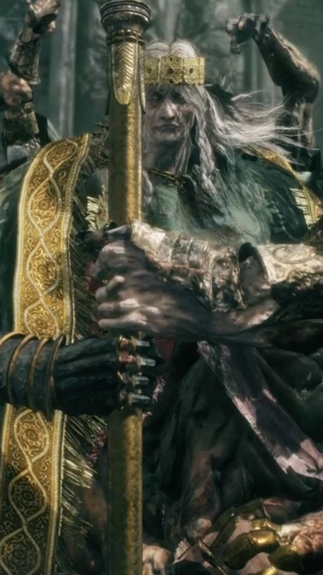
Godrick, o Enxertado
Localização: Limgrave, Castelo Tempesvéu
Runas dropadas: 15 mil
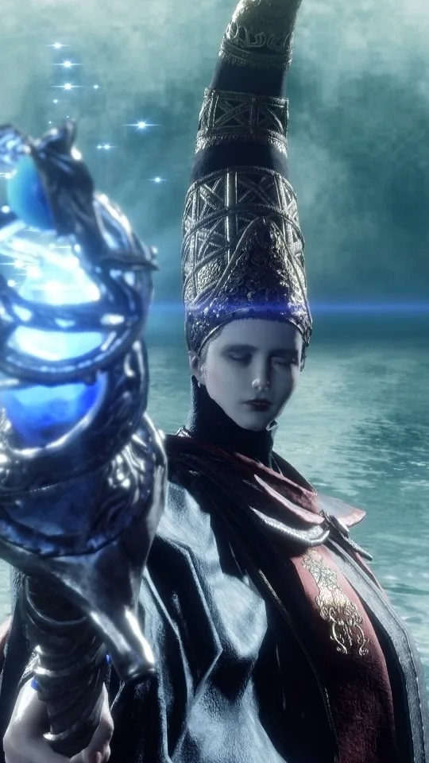
Rennala, Rainha da Lua Cheia
Localização: Liurnia dos Lagos, Academia de Raya Lucaria
Runas dropadas: 40 mil
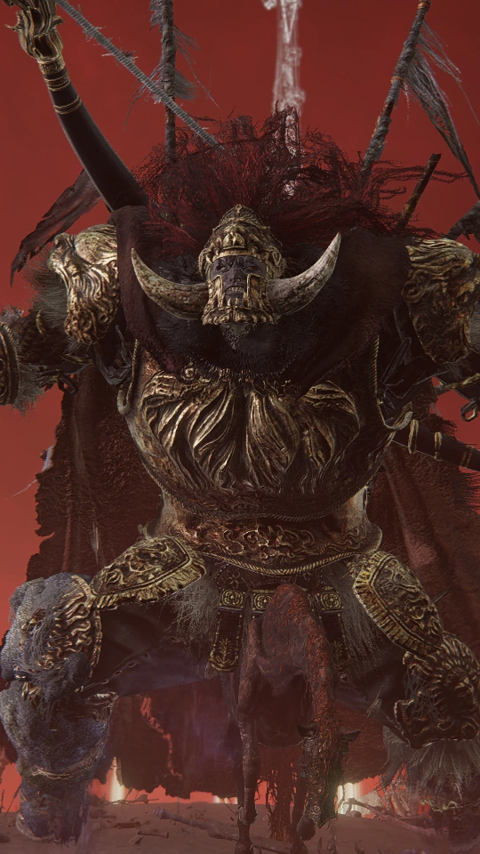
Flagelo Estelar Radahn
Localização: Caelid, Castelo da Juba Vermelha
Runas dropadas: 70 mil
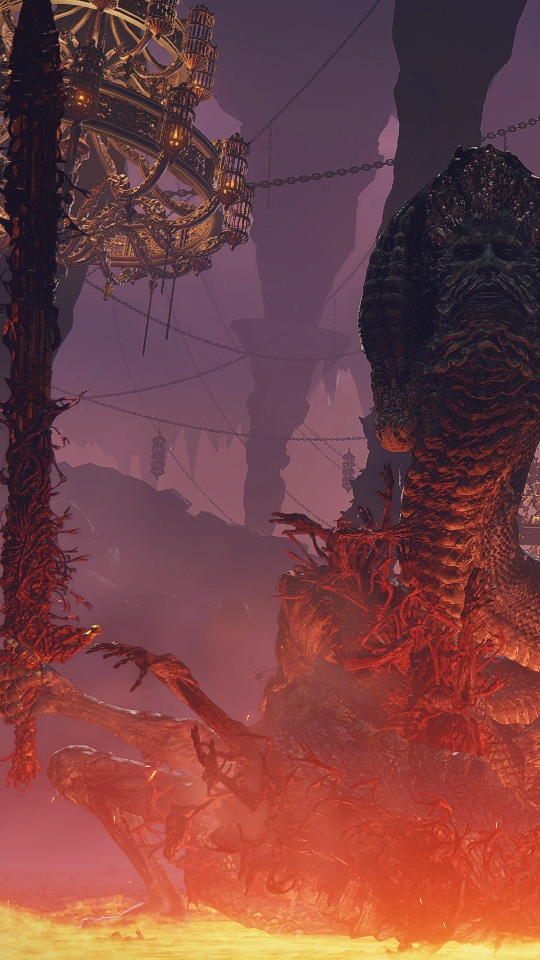
Rykard, Lorde Blasfemo
Localização: Monte Gelmir, Mansão Vulcânica
Runas dropadas: 130 mil
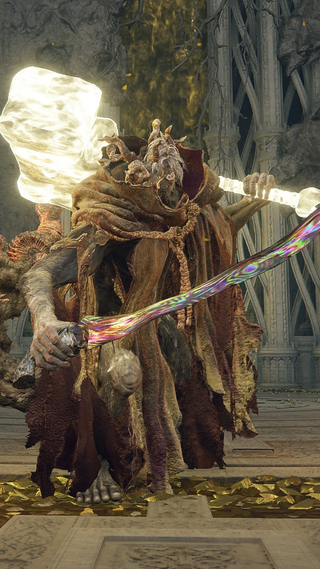
Morgott, o Rei Agouro
Localização: Leyndell, Capital Real
Runas dropadas: 120 mil
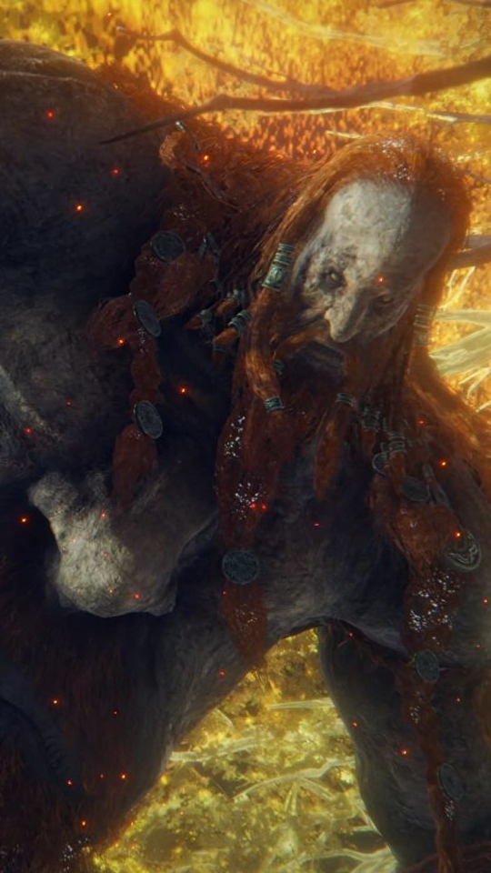
Gigante de Fogo
Localização: Montanha dos Gigantes, Pé da Forja
Runas dropadas: 180 mil
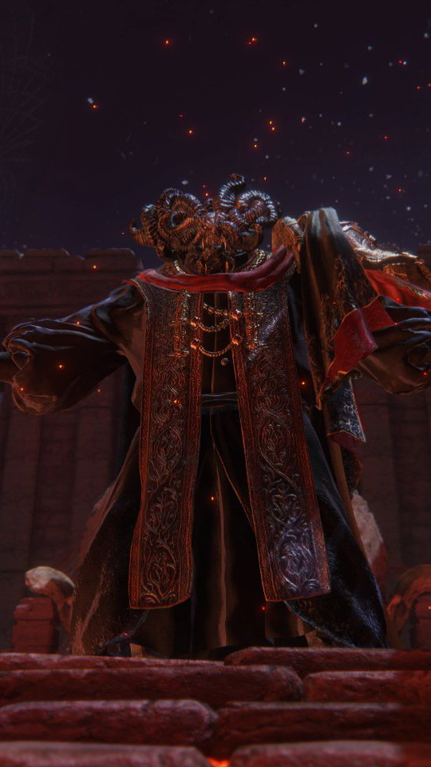
Mohg, Lorde do Sangue
Localização: Mausoléu da Dinastia Mohgwyn
Runas dropadas: 420 mil
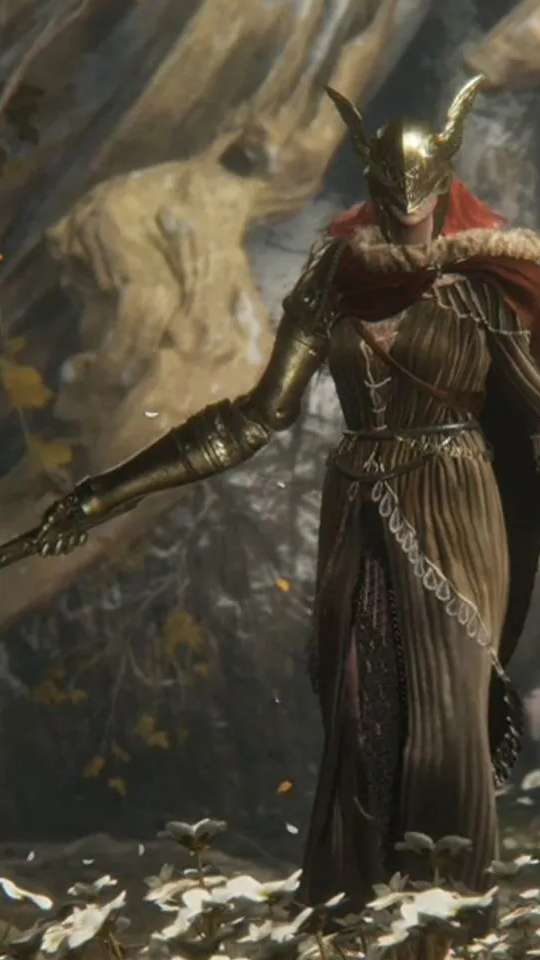
Malenia, Espada de Miquella
Localização: Elphael, Suporte da Árvore Sacra
Runas dropadas: 480 mil
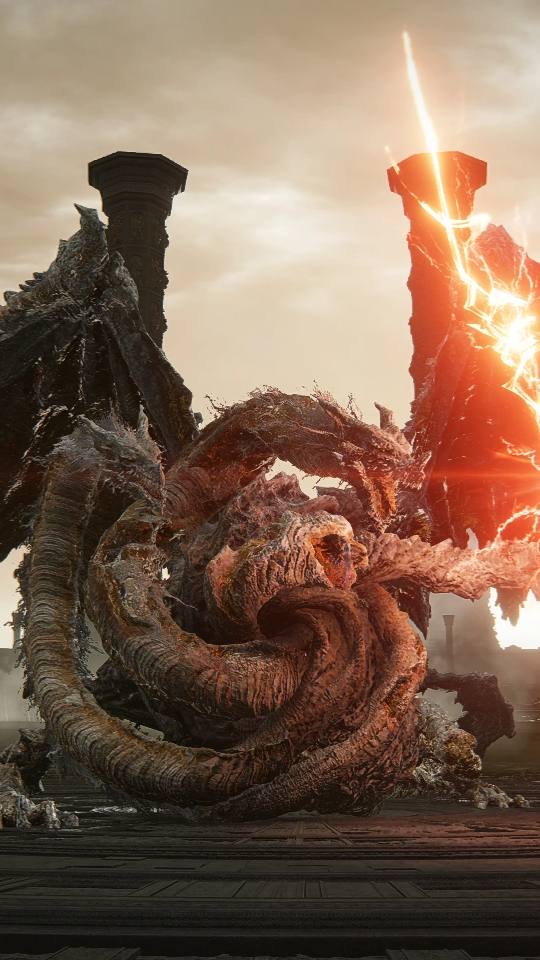
Placidusax, o Lorde Dragão
Localização: Ruínas de Farum Azula
Runas dropadas: 280 mil
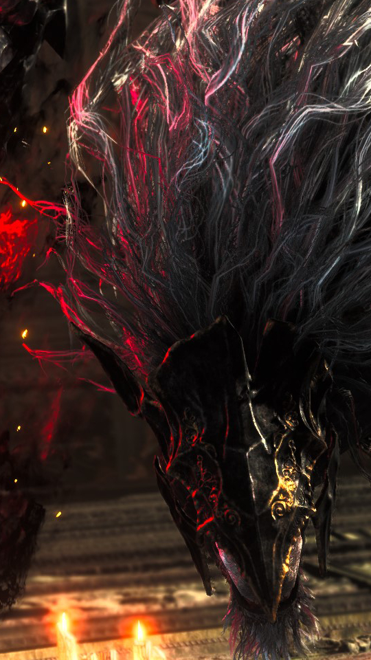
Maliketh, a Lâmina Negra
Localização: Ruínas de Farum Azula
Runas dropadas: 220 mil
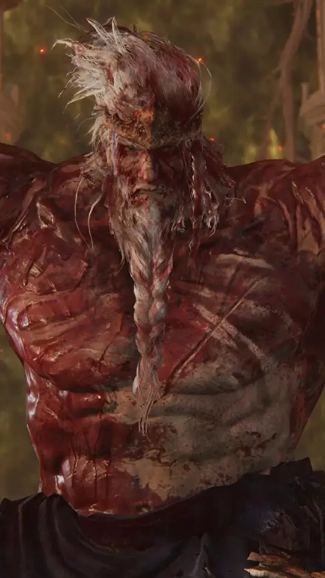
Hoarah Loux, Guerreiro
Localização: Leyndell, Capital das Cinzas
Runas dropadas: 300 mil
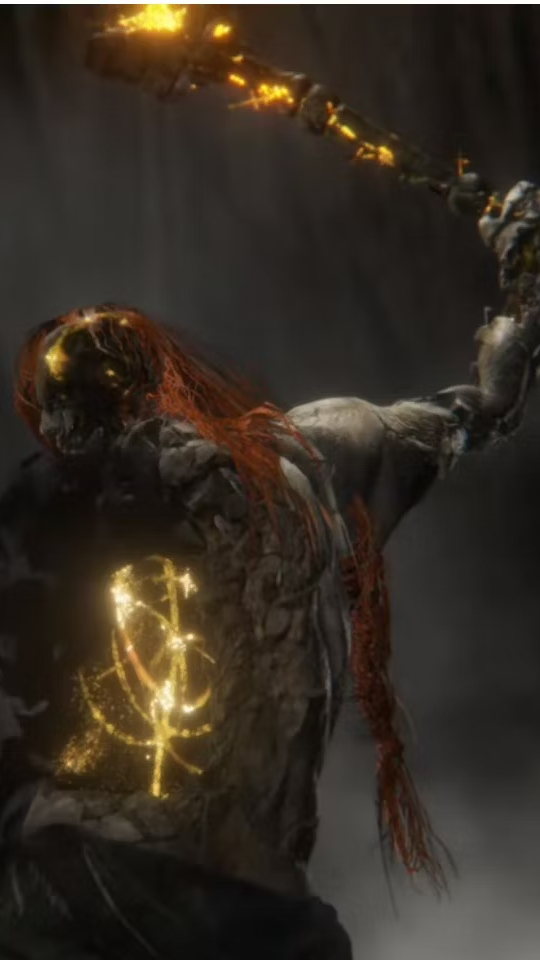
Radagon da Ordem Áurea
Localização: Leyndell, Capital das Cinzas
Runas dropadas: 500 mil